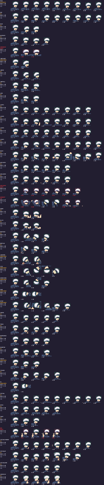
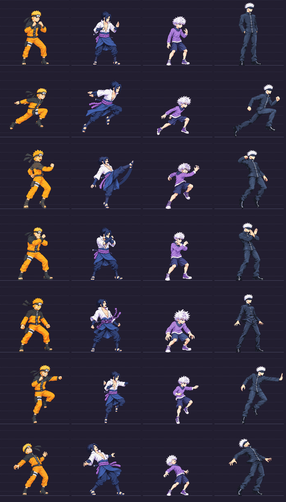

Historical review snapshot. Earlier approval and Claude calibration supersede the status below. Open the latest correction review.
Gojo · full redraw review
37 new candidates packed: one idle reference, 28 numeric-ok strips, eight requiring manual QA. Five other redraws remain technical holds. Every new image is still a candidate. This preview is not a production release. Old sprites temporarily fill held animations in the game, and are excluded from the approval list here.
The approved lean adult baseline is preserved at the shared cast scale. Review the loop and every numbered frame below. Rotated, tucked and lying poses receive low-confidence automatic measurements; these require visual anatomy review as well.
Open gameplay preview · Heads evidence · Lineup evidence. Other fighters in this branch’s lineup are historical shipped art, not their parallel redraw candidates.
Heads sheet and historical-cast lineup

